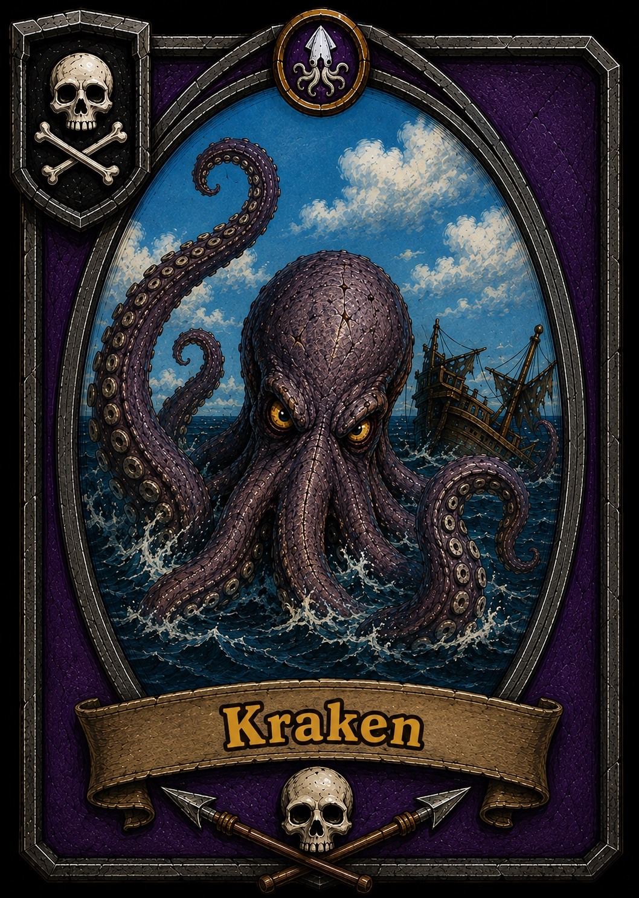
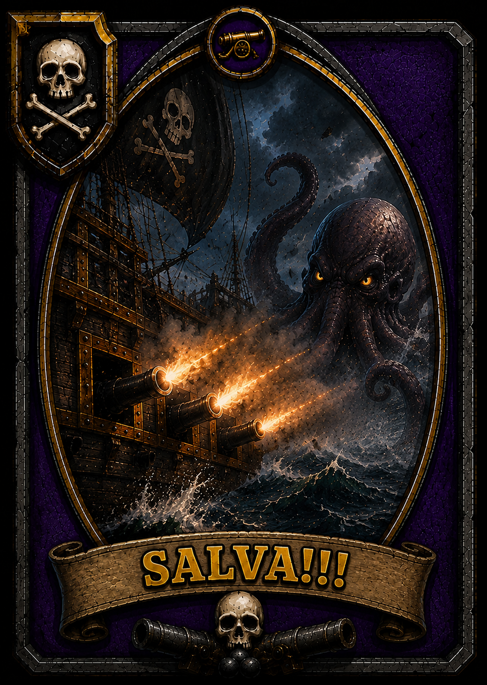
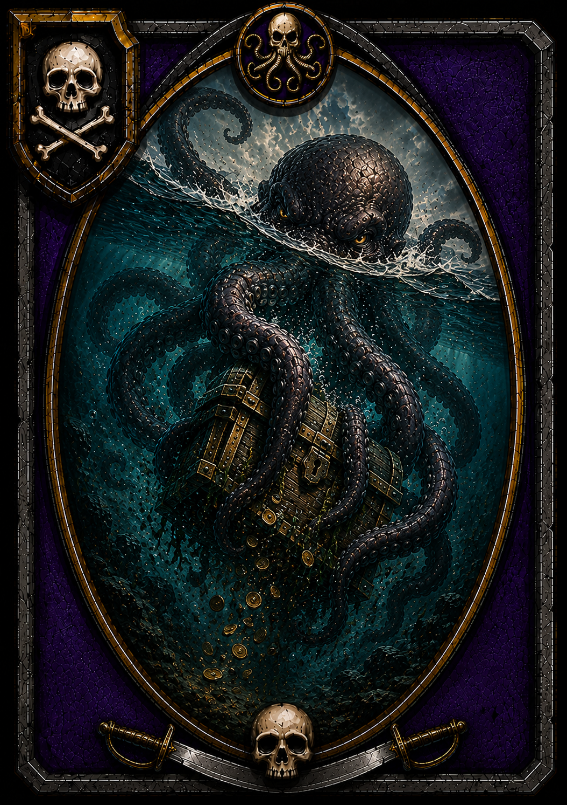
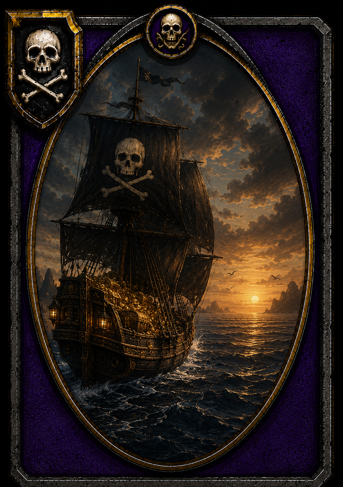

🏴☠️ Theuščina pirátská hra
⚔️ POMOZ KARTOUmísto běhu
🏃 NEBO BĚŽklikni, co ti padlo
Kdo dnes pluje k pokladu? Klikni na ty, co hrajou.
Čtyři piráti, jedna truhla. Musíme doplout všichni.
Klikni na svého piráta

Z hlubiny se vynořil KRAKEN!
Pluje za vámi a koho dohoní, toho drží.


